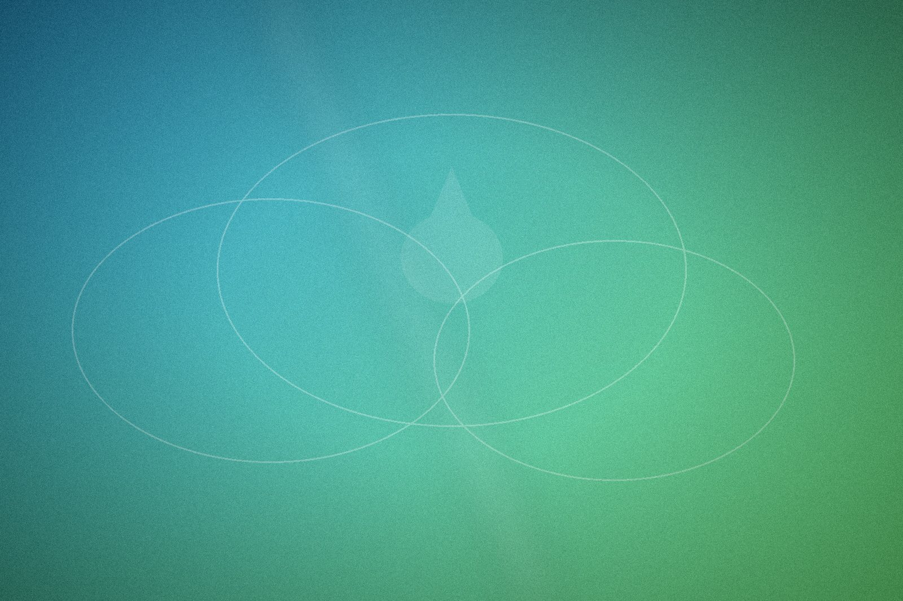

Betrouwbaarheid
Wij doen wat we beloven en zijn er wanneer u ons nodig heeft. Op onze afspraken kunt u bouwen.
Yiska Cleaning VOF is opgericht vanuit één overtuiging: bedrijven verdienen schoonmaak die klopt. Geen afgeraffeld werk, geen onduidelijkheid, wel kwaliteit, continuïteit en een partner die meedenkt.

Yiska Cleaning is ontstaan uit frustratie over de schoonmaakbranche: wisselende kwaliteit, anonieme uitvoering en beloftes die niet werden nagekomen. Wij wisten dat het anders kon, en moest.
Daarom bouwden we een schoonmaakbedrijf dat draait om betrouwbaarheid en persoonlijk contact. Geen anonieme dienstverlening, maar een vast team dat uw locatie kent en een aanspreekpunt dat u bij naam kent. Zo ontstaat een samenwerking die jaren standhoudt.
Vandaag werken we voor kantoren, bedrijfspanden, gemeenten, woningcorporaties en tankstations door heel Nederland, altijd met dezelfde belofte: schoonmaak waar u écht op kunt vertrouwen.
Onze waarden zijn geen mooie woorden, maar de manier waarop wij elke dag werken.
Wij doen wat we beloven en zijn er wanneer u ons nodig heeft. Op onze afspraken kunt u bouwen.
Geen half werk. Vaste werkmethodes, goede materialen en aandacht voor detail zorgen voor een resultaat dat klopt.
Een vast aanspreekpunt en korte lijnen. Vragen of wensen? U weet bij wie u terechtkunt.
Dat is geen slogan, maar de standaard waarop u ons mag afrekenen. Bij Yiska Cleaning weet u altijd wat u krijgt, en krijgt u wat is afgesproken.
Benieuwd wat wij voor uw organisatie kunnen betekenen? Wij vertellen u graag persoonlijk hoe wij voor rust en kwaliteit zorgen.